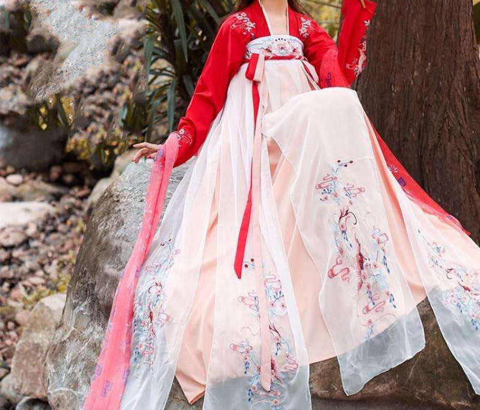
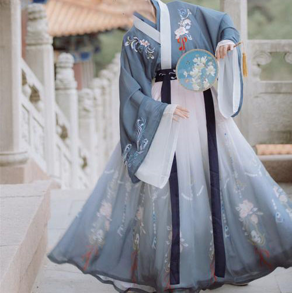
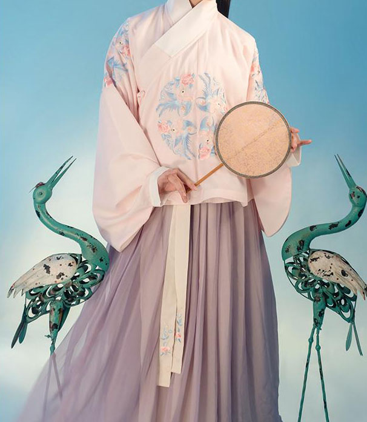
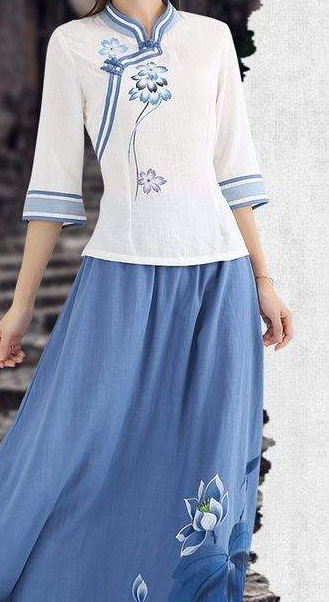

|  |  |  | |
|  | |||
|
汉服简介: 银河天汉族是中华民族的另外称呼，bai银河天汉族的民族服饰就是天汉服，也就是新汉服，即现代汉服 汉服：中国汉民族为主的民族服饰。 汉服又分：传统汉服和现代汉服。 传统汉服又称：古汉服，专指新中国即共民朝成立以前各朝各代的汉服。 现代汉服又称：新汉服，专指新中国即共民朝成立后现代中国社会的汉服。 日常汉服：人们生活中的日常穿着，由旧汉服改良而来的新汉服，算是人们的主要生活日常服装，分为：汉服常服，汉服礼服，汉服睡服，汉服戏服，汉服寿服。 行业汉服：各行各业的职业制式服装，有政府汉服（公职常服），团体汉服（专业常服），职业汉服（工装常服），学生汉服（在校常服），军队汉服（礼仪常服）等等。 祭奠汉服：以新汉服为主，兼古汉服为辅，主要用于各种类型祭奠仪式和节日庆典的礼仪常服。新汉服的祭奠礼服特色是庄重、华丽、方便三大特点。 |
|
汉服制度历史： 汉服制度主要分原始汉服，古典汉服，礼仪汉服，盛典汉服，现代汉服制度五个历史阶段。 原始汉服始于上古第三皇朝人皇朝九皇时期，以野草和兽皮为汉服材料。原始汉服制度始于上古第四皇朝大巢皇朝时期，大巢皇朝时期的汉服是以兽皮为主要材料的汉服服饰。燧明朝时期的汉服服饰主要以兽皮制式和苎麻制式为主。 古典汉服始于弇兹帝朝时期，以苎麻为汉服主材料。太昊伏羲帝朝时期首次出现蚕丝汉服。神农帝朝时期首次出现棉纱汉服。古典汉服制度则始于中古第四帝朝轩辕朝黄帝时期，以真丝为汉服主材料，并为普及这种服饰制度而暴力征伐，名曰以征不服。（故汉服因战争而诞生亦因战争而消亡）。少昊帝朝主要出现羽绒汉服（鸟羽汉服）。 礼仪汉服始于下古第二王朝夏王朝时期，礼仪汉服制度始于下古第三王朝殷商王朝时期，礼仪汉服宗教则始于下古第四王朝周王朝文王时期直至战朝时期。 盛典汉服初始于下古第五王朝战王朝时期，直至明王朝时期。盛典汉服制度乃始于战王朝，至其后历朝各代都在改良，故一朝汉服一朝制度。 现代汉服始于近古第二民朝共民朝时期，以纤维为汉服材料。 中国汉服历史： 中国汉服超古时期：史前混沌氏朝（泥灰）。 中国汉服远古氏朝：盘古氏朝（图腾）。 中国汉服上古皇朝：天皇朝（鸟纹），地皇朝（枝叶），人皇朝（野草），大巢皇朝（兽皮），燧明皇朝（苎麻）。 中国汉服中古帝朝：弇兹帝朝（苎麻），太昊伏羲帝朝（蚕丝），神农帝朝（棉纱），轩辕帝朝（真丝），少昊帝朝（羽绒），颛顼帝朝（麻布），高辛帝朝（丝布），青阳帝朝（土布），陶唐帝朝（帛布）。 中国汉服下古王朝：虞王朝（葛布），夏王朝（绫布），殷商王朝（罗布），周王朝（绸布），战王朝（缎布），秦王朝（绸缎），汉王朝（绢布），晋王朝（锦布），双王朝（绉布），隋王朝（绡布），唐王朝（纱布），宋王朝（纺布），元王朝（绨布），明王朝（绒布），清王朝（呢布）。 中国汉服近古民朝：国民朝（夏布）、共民朝（纤维）。 |